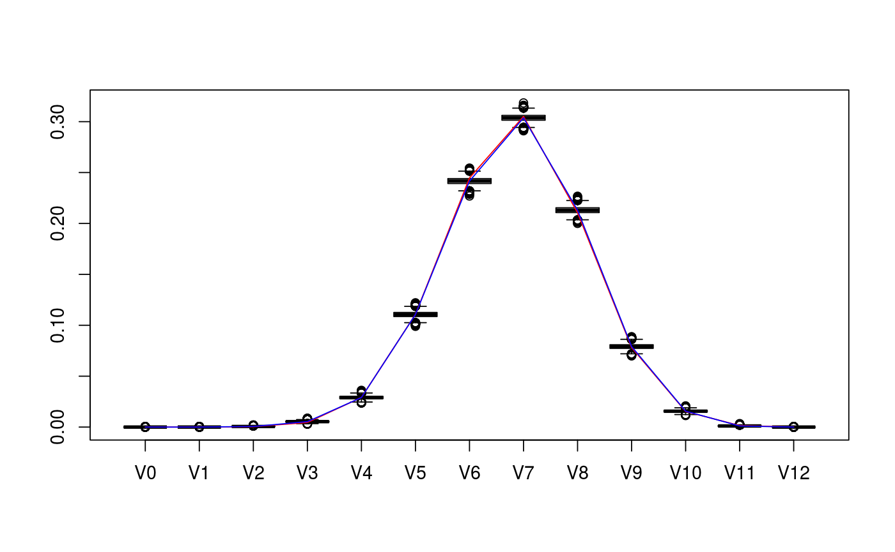
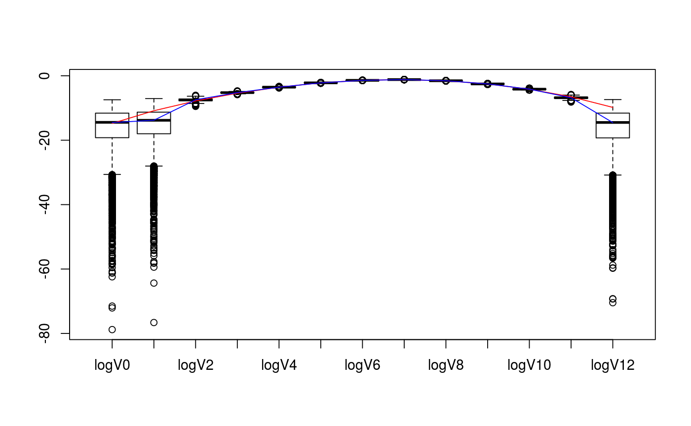

polyh_bayes generates functions for computing quantiles of marginals
of the posterior distribution and for sampling from the posterior distribution,
given direct (multinomial) samples of the intrinsic volumes distribution.
polyh_bayes(multsamp, dimC, linC, v_prior = NA, prior_sample_size = 1)
| multsamp | vector of integers representing a sample from the multinomial intrinsic volumes distribution of a convex cone |
|---|---|
| dimC | the dimension of the cone |
| linC | the lineality of the cone |
| v_prior | a prior estimate of the vector of intrinsic volumes (NA by default) |
| prior_sample_size | the sample size for the prior estimate (1 by default -> noninformative) |
The output of polyh_bayes is a list containing the following elements:
post_marg_quant: a function that computes the quantiles of the
marginals of the posterior distribution;
marg_quant(i,alpha) returns the value x
such that Prob(v_i<x)=alpha;
the index i as well as the probability alpha
may be vectors,
post_samp: a function that returns samples of the posterior distribution;
post_samp(n) returns an n-by-(dimC+1)
matrix whose rows form a set of n independent samples
of the posterior distribution,
Dir: a list containing the weights of the Dirichlet distributions
that make up both prior and posterior distributions.
See this vignette for further info.
polyh_rivols_gen, polyh_rivols_ineq,
polyh_stan
Package: conivol
# set parameters of cones D <- c(5,7) cone_types <- c("BC","BCp") d <- sum(D) # collect matrix representation and true intrinsic volumes v <- weyl_ivols(D, cone_types, product = TRUE) A <- weyl_matrix(D, cone_types, product = TRUE) true_data <- list( ivols=v, A=A ) print(true_data)#> $ivols #> [1] 3.814697e-07 1.937382e-05 4.049618e-04 4.514140e-03 2.911474e-02 #> [6] 1.107105e-01 2.446381e-01 3.051200e-01 2.105028e-01 7.816557e-02 #> [11] 1.528444e-02 1.470407e-03 5.455017e-05 #> #> $A #> [,1] [,2] [,3] [,4] [,5] [,6] [,7] [,8] [,9] [,10] [,11] [,12] #> [1,] -1 1 0 0 0 0 0 0 0 0 0 0 #> [2,] 0 -1 1 0 0 0 0 0 0 0 0 0 #> [3,] 0 0 -1 1 0 0 0 0 0 0 0 0 #> [4,] 0 0 0 -1 1 0 0 0 0 0 0 0 #> [5,] 0 0 0 0 -1 0 0 0 0 0 0 0 #> [6,] 0 0 0 0 0 1 0 0 0 0 0 0 #> [7,] 0 0 0 0 0 1 1 0 0 0 0 0 #> [8,] 0 0 0 0 0 1 1 1 0 0 0 0 #> [9,] 0 0 0 0 0 1 1 1 1 0 0 0 #> [10,] 0 0 0 0 0 1 1 1 1 1 0 0 #> [11,] 0 0 0 0 0 1 1 1 1 1 1 0 #> [12,] 0 0 0 0 0 1 1 1 1 1 1 1 #># collect sample data from intrinsic volumes distribution n <- 10^4 set.seed(1234) out <- polyh_rivols_ineq(n,A) str(out)#> List of 7 #> $ dimC : int 12 #> $ linC : int 0 #> $ QL : logi NA #> $ QC : num [1:12, 1:12] 1 0 0 0 0 0 0 0 0 0 ... #> $ A_reduced: num [1:12, 1:12] -1 0 0 0 0 0 0 0 0 0 ... #> $ samples : int [1:10000] 8 7 7 8 6 6 8 6 9 4 ... #> $ multsamp : int [1:13] 0 0 6 53 294 1093 2445 3002 2156 782 ...# evaluate posterior distribution bayes_est <- polyh_bayes( out$multsamp, out$dimC, out$linC ) str(bayes_est)#> List of 3 #> $ post_marg_quant:function (i, alpha) #> ..- attr(*, "srcref")=Class 'srcref' atomic [1:8] 677 19 695 5 19 5 677 695 #> .. .. ..- attr(*, "srcfile")=Classes 'srcfilecopy', 'srcfile' <environment: 0x8687148> #> $ post_samp :function (n) #> ..- attr(*, "srcref")=Class 'srcref' atomic [1:8] 697 18 706 5 18 5 697 706 #> .. .. ..- attr(*, "srcfile")=Classes 'srcfilecopy', 'srcfile' <environment: 0x8687148> #> $ Dir :List of 2 #> ..$ prior:List of 2 #> .. ..$ even: num [1:7] 0.143 0.143 0.143 0.143 0.143 ... #> .. ..$ odd : num [1:6] 0.167 0.167 0.167 0.167 0.167 ... #> ..$ post :List of 2 #> .. ..$ even: num [1:7] 0.143 6.143 294.143 2445.143 2156.143 ... #> .. ..$ odd : num [1:6] 0.167 53.167 1093.167 3002.167 782.167 ...# compare posterior median with true values v_est_med <- bayes_est$post_marg_quant(0:sum(D),0.5) v_est_med / v#> [1] 1.273998143 0.052475342 1.418592887 1.184300468 0.997309037 0.998828950 #> [7] 0.987637547 0.995500986 1.012113544 1.012102558 1.020376834 0.745630240 #> [13] 0.008909078sum( (v_est_med-v)^2 )#> [1] 1.941205e-05# display boxplot of posterior distribution, overlayed with true values data <- as.data.frame( bayes_est$post_samp(1e4) ) colnames(data) <- paste0(rep("V",d+1),as.character(0:d)) boxplot( value~key, tidyr::gather( data, factor_key=TRUE ) )lines(1+0:d, v, col="red")lines(1+0:d, v_est_med, col="blue")# display boxplot of posterior distribution of logs, overlayed with true values data <- as.data.frame( log(bayes_est$post_samp(1e4)) ) colnames(data) <- paste0(rep("logV",d+1),as.character(0:d)) boxplot( value~key, tidyr::gather( data, factor_key=TRUE ) )lines(1+0:d, log(v), col="red")lines(1+0:d, log(v_est_med), col="blue")